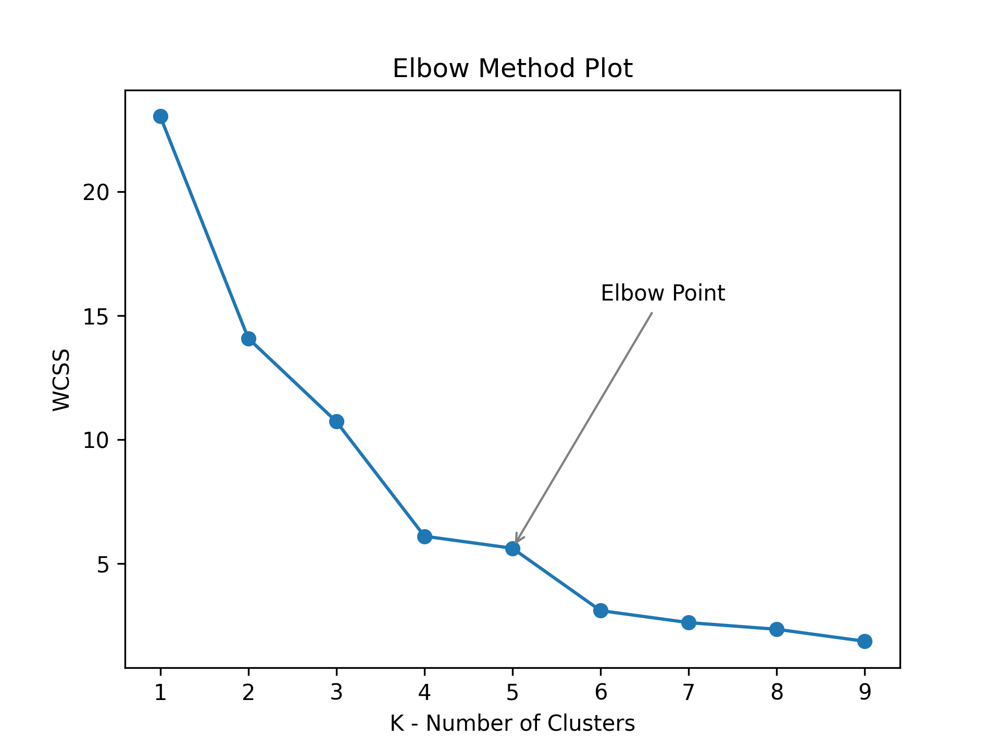
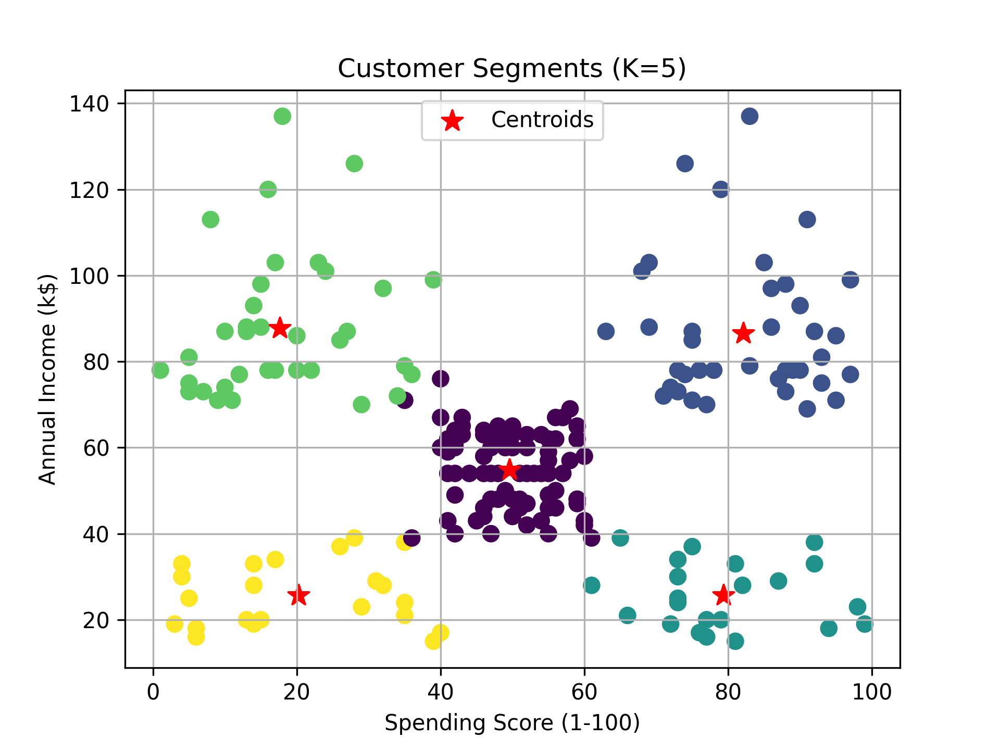
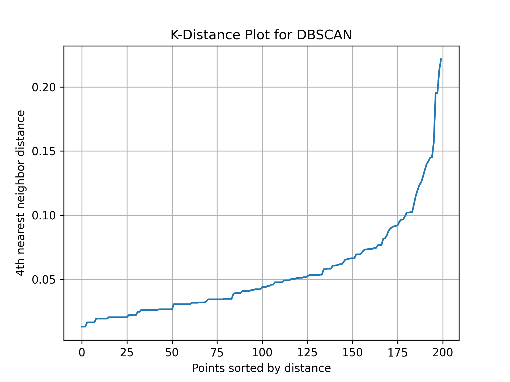
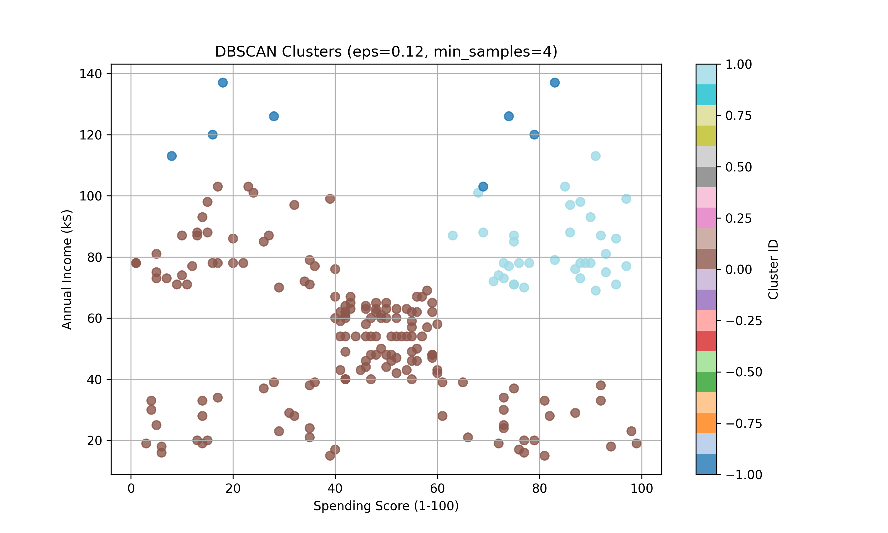
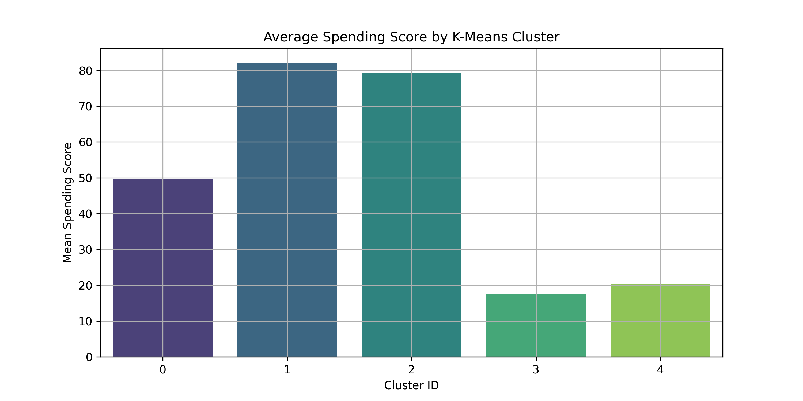
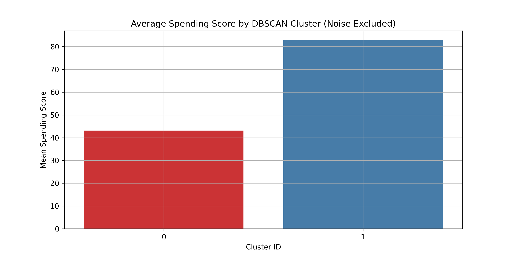

The goal of this project is to cluster mall customers into different segments based on their
Annual Income and Spending Score. The aim is to understand customer
behavior and enable targeted marketing strategies using unsupervised learning techniques.
Methodology
Data Exploration & Visualization: Check missing values, basic statistics, scatter plots of income vs spending score.
Feature Scaling: Normalize features using MinMaxScaler.
K-Means Clustering: Determine optimal number of clusters using Elbow Method, train K-Means, visualize clusters.
Bonus: DBSCAN Clustering for comparison using K-Distance plot to find eps.
Cluster Analysis: Calculate average spending score per cluster and visualize using bar charts.
Key Visuals




Results
K-Means Cluster Analysis
Cluster ID
Count
Min Score
Max Score
Mean Score
0
81
35
61
49.543
1
39
63
97
82.128
2
22
61
99
79.364
3
36
1
39
17.583
4
22
3
40
20.227

DBSCAN Cluster Analysis (Noise Excluded)
Cluster ID
Count
Mean Spending Score
Mean Annual Income
0
157
43.102
52.490
1
35
82.800
82.543

Insights
K-Means clustering effectively separated customers into meaningful segments for targeted marketing.
DBSCAN revealed alternative clustering structure, with some noise points that might indicate outliers or niche segments.
High-spending clusters can be prioritized for premium marketing campaigns.
Low-spending clusters can be targeted for loyalty or engagement strategies.